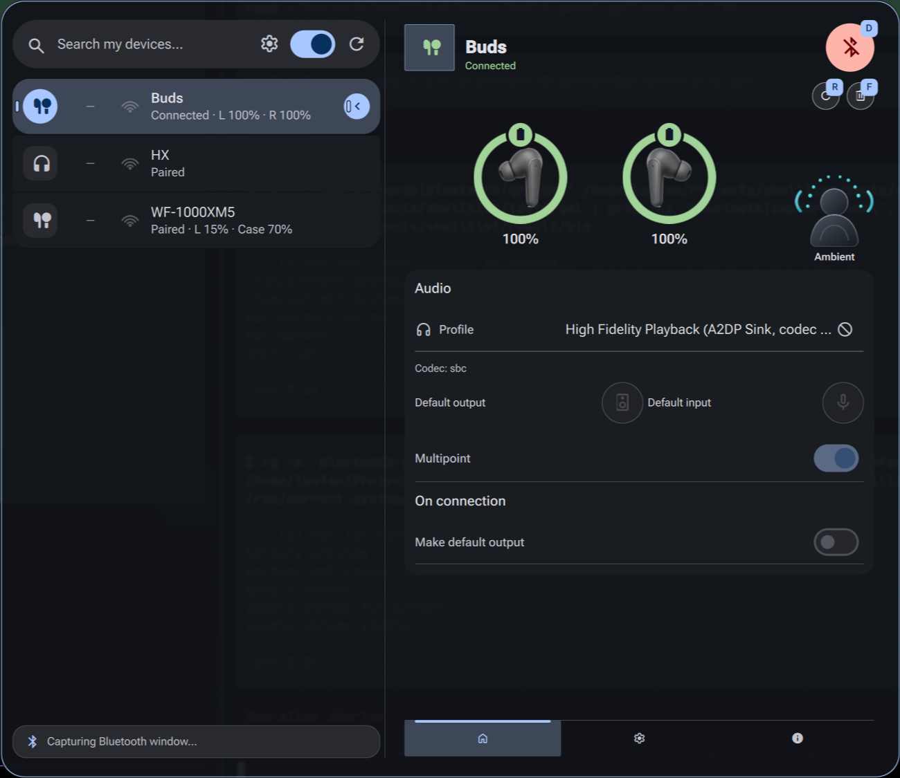

Start with the Ambient control that’s already there.
Your screenshot is the canvas—not a new Bluetooth interface. These three proposals keep the Buds view and add only the affordances needed to change noise-control modes.
Today · your original screenshot, unmodified

The existing Ambient image and label are read-only. This exact screenshot is retained underneath every proposal below. The proposed additions are HTML overlays; they are not captures of implemented QML.
01 · Make the existing artwork the entry point.
It is already where you look to see the mode. Add a subtle edit affordance and a chooser there, rather than introducing a second place to manage it. The Audio card and battery layout do not move.
Choose 02 if seeing all four images together matters more than preserving vertical space. Choose 03 if matching the existing Profile field is more important than keeping control and status in the same place.
Same keyboard model as Shelllist
- One editable field—not four separate Tab stops.
- Tab browses to the field; Enter starts editing.
- Arrows change the candidate only. Enter saves; Escape discards.
- In Shelllist, Tab / Shift+Tab while editing saves and enters the next / previous editor.
- Clicking a mode is an explicit save, like a shared dropdown with
saveOnOptionClick. Clicking outside discards a draft. - No new Alt shortcut is assigned. Existing D / R / F actions stay unchanged.
Same device truth in every proposal
- Ambient maps to
transparent; the other existing labels and artwork stay unchanged. - Only advertise modes the device reports; show unavailable-to-set modes disabled with a reason.
- The check and hero artwork follow confirmed device state, never keyboard highlighting.
- While a command is pending, retain the old mode and prevent duplicate requests. Failures keep the old mode and an inline explanation.
- If disconnected or controls are unavailable, keep the last known mode read-only. No account-key gate for unsigned ANC.